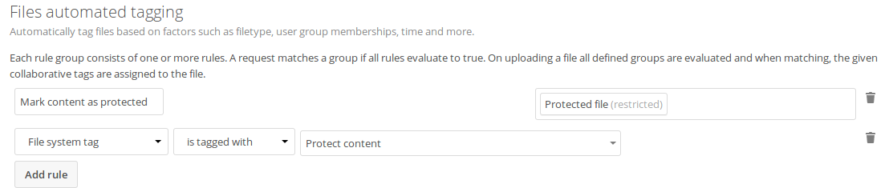

Automated tagging of files¶
Nextcloud’s Files Automated Tagging app allows to assign collaborative tags to files and folders based on rules, similar to Files access control.
Assigning restricted and invisible tags¶
The main functionality of this app is to allow users to indirectly assign restricted and invisible tags to files they upload.
This is especially useful for retention and Files access control, so people that got the files shared can not remove the tag to stop the retention or allow access against the owners will.
Example¶
After installing the Files automated tagging app as described in Apps management navigate to the configuration and locate the Workflow settings.

In the example you can see a simple rule with only one condition.
It will tag all files with the restricted tag Protected file that are
uploaded into a folder that is tagged with Protect content. No user can
remove the tag Protected file and therefor access control and retention
both work fine without users being able to work around them.
Available rules¶
The available rules can be seen in the access control section: Available rules.
Executing actions¶
It is possible to execute actions like `convert to PDF` based on assigned tags. Nextcloud
GmbH assists customers in this with hands-on help and documentation on our
customer portal.